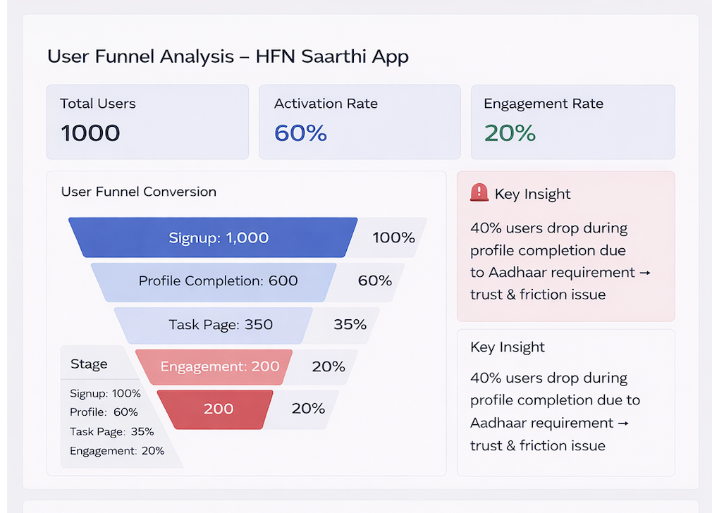
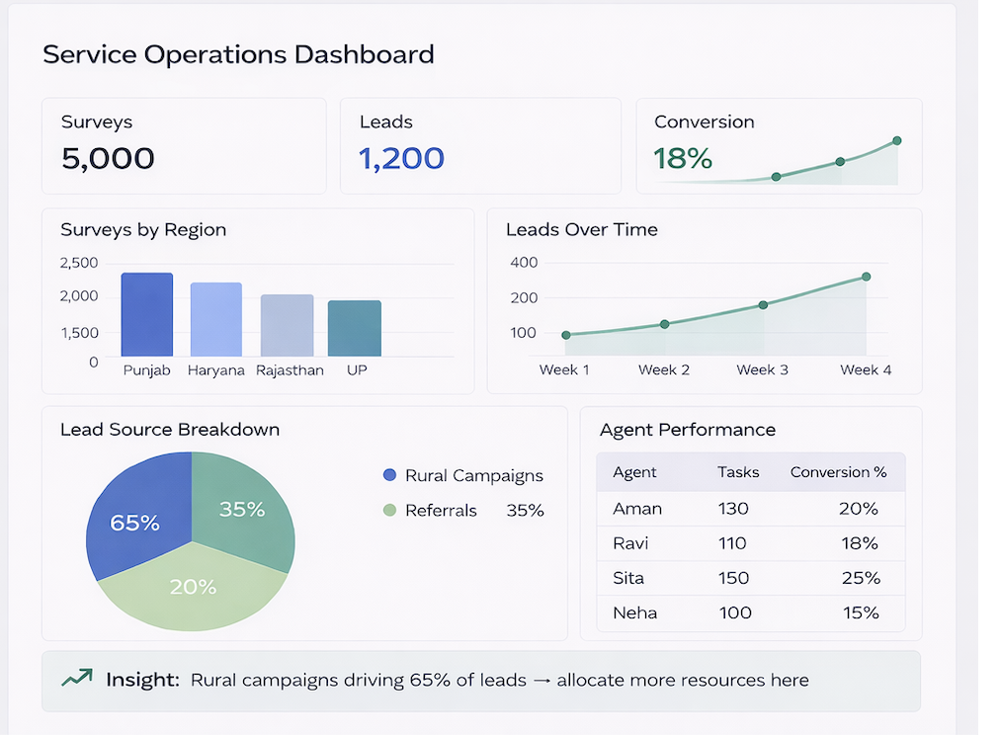
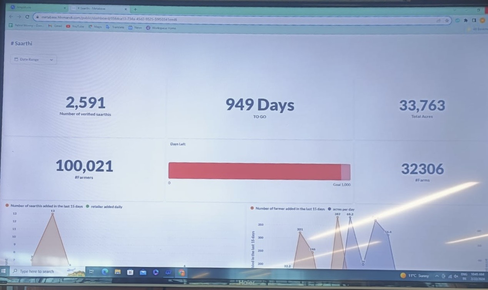

User Retention Cohort Analysis
Analyzed retention trends across cohorts to improve long-term engagement.

Analyzed user drop-offs and improved activation funnel.

Tracked surveys, leads, and operational metrics across regions.

Analyzed retention trends across cohorts to improve long-term engagement.
Tracked user actions across key features to identify engagement gaps.

Monitored user activity over time to identify growth patterns.

Built executive dashboard tracking users, surveys, and growth metrics.
